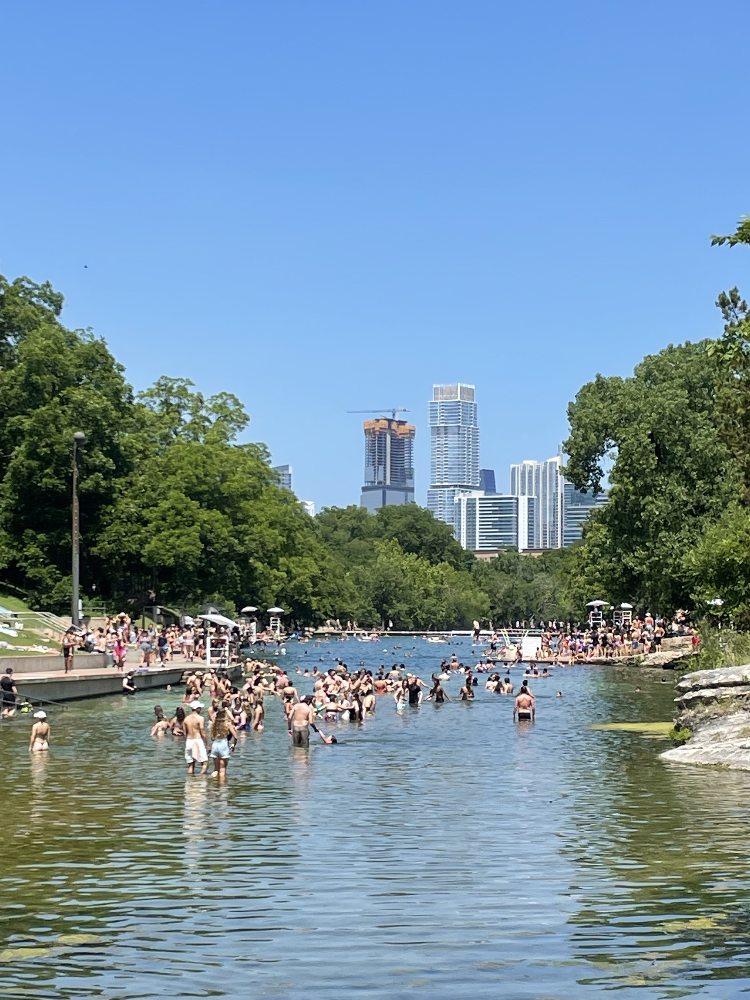
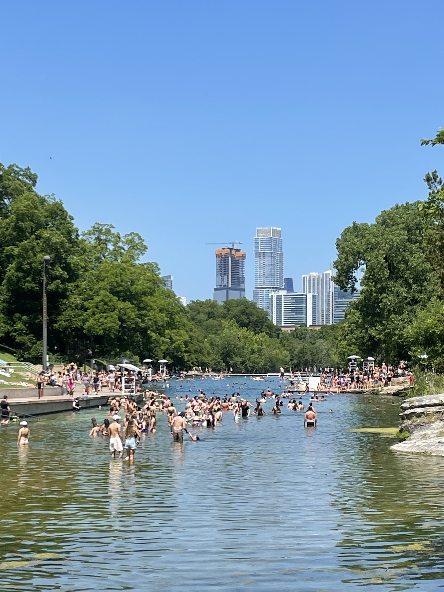
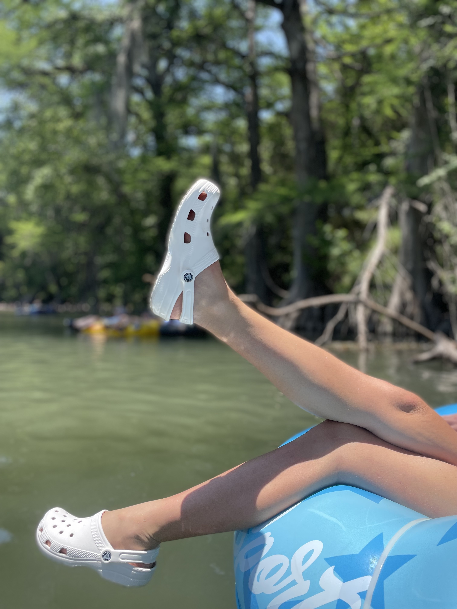
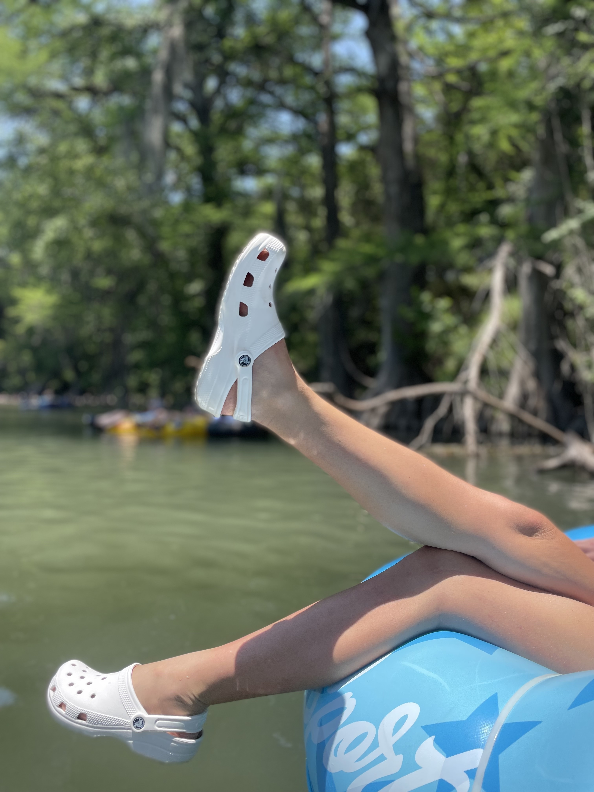

Visit Barton Springs
Barton Springs is a great spot to cool off. The spring is bordered by grassy areas perfect for laying down your towel and catching some rays. Whilst swimming you can enjoy the cityscape view of Downtown Austin.
 

 
